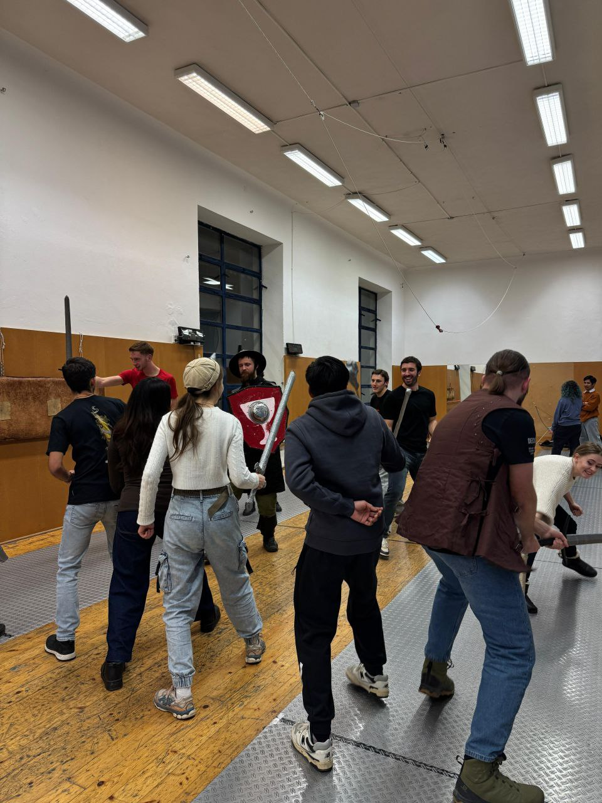

Brno · Movement · Mind
Your Guide in Brno — Tutoring, Hiking & HEMA/LARP
PhD-level tutoring in sciences, IT, languages and music, weekend hikes with BrnoWalkers, and historical combat training with Družina Moravy.
- PhD, Biomolecular Chemistry & Bioinformatics — Masaryk University
- Teaching since 2015
- 230+ combined community across BrnoWalkers & Družina Moravy
- ⭐ 45+ reviews, 5.0 on Google
What we offer
Eternal Learning — Tutoring & Coaching
PhD-level 1-on-1 lessons: sciences, IT, Czech, English, native Russian & Belarusian, music, public speaking. Packages save up to 15%.
See tutoring & prices →BrnoWalkers
Guided hikes, cave tours and city walks across Moravia, plus a weekly Tuesday board game night. Open to solo travellers, families and dogs.
See upcoming hikes →Družina Moravy
Historical European martial arts (HEMA) and LARP club, training 3× a week in Brno. First training 100 Kč.
See training schedule →Services & Pricing
Academy — Tutoring & Coaching Prices in Brno#
PhD-level 1-on-1 and small-group lessons across the full subject range below — sciences, IT, languages including native Russian & Belarusian, music, and public speaking. The same discount structure (packages save up to 15%) applies across every subject.
💡 First session in any category — 100 Kč discount. Online is always 100 Kč/hr cheaper than in-person. Urgent request (under 48h) — +50% surcharge.
💳 Pay via Revolut: revolut.me/aliaksj5pq — locks in your slot. Bank transfer / cash on request.
📚 Tutoring & Education
- School curriculum grades 7–11
- Exam prep: Maturita / A-levels
- Organic & inorganic chemistry
- Biochemistry (advanced)
- General biology grades 7–11
- Molecular biology & genetics
- Anatomy & physiology
- Maturita preparation
- School curriculum grades 7–11
- Mechanics, electricity, optics
- Exam preparation
- Olympiad problem solving
- Algebra & geometry
- Trigonometry, functions
- Maturita preparation
- Statistics & probability
- Complete beginners welcome
- Tactics & strategy
- Game analysis
- Opening theory
- University biochemistry course
- Molecular biology (PhD level)
- University entrance exam prep
- Coursework & thesis support
- Python (zero to projects)
- UNIX / Linux command line
- Algorithms & data structures
- Intro to data science
- World & European history
- Czech & Moravian history
- Middle Ages & HEMA context
- Exam preparation
- Czech for beginners (A1–A2)
- Czech for permanent residency (B1–B2)
- Language exam preparation
- Conversational practice
- Business English
- IELTS / Cambridge exam prep
- Conversational practice
- English for children
- Diagnosis & treatment analysis
- Support communicating with doctors
- Medical interpreting (online/in-person)
- Medical document nostrification
- Malware removal, basic security hardening, and a check for suspicious software on your computer.
- Guitar (classical / rock / acoustic)
- Piano
- Vocals & voice coaching
- Music theory
- Overcoming stage fright
- Speech structure & argumentation
- Voice & body language
- Presentation preparation
| Individual online (1 hour) | 500 Kč |
| Individual in-person (1 hour) | 600 Kč |
| Group 2–4 online (1 hr/person) | 350 Kč |
| Group 2–4 in-person (1 hr/person) | 400 Kč |
| 🎁 First lesson (any format) | 300 Kč |
📚 Packages cost less than single lessons — save up to 15%.
📚 Packages — Individual online
| 5 lessons (−5%) | 2,375 Kč |
| 10 lessons (−10%) | 4,500 Kč |
| 20 lessons (−15%) | 8,500 Kč |
📚 Packages — Individual in-person
| 5 lessons (−5%) | 2,850 Kč |
| 10 lessons (−10%) | 5,400 Kč |
| 20 lessons (−15%) | 10,200 Kč |
📚 Packages — Group online (per person)
| 5 lessons (−5%) | 1,663 Kč |
| 10 lessons (−10%) | 3,150 Kč |
| 20 lessons (−15%) | 5,950 Kč |
📚 Packages — Group in-person (per person)
| 5 lessons (−5%) | 1,900 Kč |
| 10 lessons (−10%) | 3,600 Kč |
| 20 lessons (−15%) | 6,800 Kč |
| Maturita prep (15 lessons + tests) | 5,000 Kč |
| Czech for residency (18 lessons) | 6,000 Kč (−1,200 Kč) |
| Czech monthly membership | 600 Kč/mo (online + practice) |
| Full residency pack (20h + document help) | 7,000 Kč |
⚔️ Personal Fencing & Archery
Individual sessions outside the club — group training runs on Družina Moravy's own membership pricing, not this table.
| Personal fencing (1 hour) | 700 Kč |
| Group fencing (1.5 hr/person) | 500 Kč |
| Personal archery (1 hour) | 800 Kč |
| Group archery (1 hr/person) | 550 Kč |
📚 Packages save up to 15% here too.
📚 Packages — Personal fencing
| 5 lessons (−5%) | 3,325 Kč |
| 10 lessons (−10%) | 6,300 Kč |
| 20 lessons (−15%) | 11,900 Kč |
📚 Packages — Group fencing
| 5 lessons (−5%) | 2,375 Kč |
| 10 lessons (−10%) | 4,500 Kč |
| 20 lessons (−15%) | 8,500 Kč |
📚 Packages — Personal archery
| 5 lessons (−5%) | 3,800 Kč |
| 10 lessons (−10%) | 7,200 Kč |
| 20 lessons (−15%) | 13,600 Kč |
📚 Packages — Group archery
| 5 lessons (−5%) | 2,613 Kč |
| 10 lessons (−10%) | 4,950 Kč |
| 20 lessons (−15%) | 9,350 Kč |
🗺️ Guided Tours
Included: guide, route, maps, planning. Not included: transport, food, entry tickets.
| Individual tour (1 day) | from 2,000 Kč |
| Group tour (1 day, 4+ people) | from 1,000 Kč/person |
Private, custom-route tours — different from BrnoWalkers' regular scheduled hikes and events, which are priced per event and listed in the BrnoWalkers section. Worth double-checking this distinction reads clearly to a visitor before it goes live.
💪 Fitness & Personal Training
Outdoors or at the client's location. Experience: 100+ trained clients.
| Personal in-person (1 hour) | 600 Kč |
| Personal online (1 hour) | 400 Kč |
| Group training (single) | 300 Kč |
| 🎁 First session in-person | 400 Kč |
| 🎁 First session online | 300 Kč |
📚 Packages & passes — cost less per session
| 4-session group pass | 600 Kč (150 Kč/session) |
| 8-session group pass | 1,000 Kč (125 Kč/session) |
| 5-session personal in-person pack | 2,000 Kč (−500 Kč) |
| 10-session personal in-person pack | 3,350 Kč (−1,650 Kč) |
| 1-month online programme (plan + nutrition) | 2,000 Kč/mo |
| Weight-loss programme (8 weeks) | 4,000 Kč |
| 3-month body transformation | 5,000 Kč |
🥗 Nutrition Consulting
Personal nutrition plans, ongoing support, adjustments.
| Initial consultation (90 min) | 600 Kč |
| Personal nutrition plan | 600 Kč |
| Monthly support | 2,000 Kč/mo |
| Single correction session (60 min) | 700 Kč |
Fitness + Nutrition bundle into real Combo Packages in your data (e.g. 10 training sessions + a nutrition plan) at a further discount — not built yet, coming with the Combo Packages / Loyalty / Gear Rental pass.
🌍 Expat Support
Work, housing, medicine, documents, legal issues, nostrification.
| General consultation (1st hour) | 300 Kč |
| Each additional hour | 400 Kč |
| Doctor search | 700 Kč |
| Lawyer search | 900 Kč |
| University admission consultation (1h) | 500 Kč |
| Medical diagnosis & treatment analysis | 1,000 Kč |
| Nostrification assistance | from 3,500 Kč |
| Legal representation (advocacy) | from 1,500 Kč |
| Medical advocacy | from 2,000 Kč |
| Interpreting online (legal/medical) | 600 Kč/hr |
| In-person interpreting at meetings | 900 Kč/hr |
🏠 Brno Housing Support
For community newcomers and referrals.
Tier 0 — Basic Consultation Free
A curated list of vetted resources — bezrealitky.cz, sreality.cz, espolubydleni.cz, relevant Facebook groups — plus price/area guidance for your budget and one detailed reply. Open to anyone reaching out through the community or a warm referral.
Tier 1 — Boosted Listing
| 300 Kč | Post the request as-is across my channels (BrnoWalkers, Družina Moravy, Instagram, Facebook — 250+ people in Brno) |
| 500 Kč | Same, plus translation/adaptation into Czech for the platform |
Runs 7 days or until a match is found. No outcome guarantee — this is reach, not a placement guarantee.
Tier 2 — Personal Accompaniment 500 Kč/hour
Minimum package: 2 hours (1,000 Kč, prepaid). Shortlisting options against your criteria, calling/messaging landlords in Czech, accompanying viewings within Brno, a basic sanity-check of the lease for obvious red flags.
Not included: legal review of the contract, or brokerage-style service tied to a commission/success fee — this is billed for time, not outcome.
General terms: payment in Kč, cash or bank transfer (OSVČ, IČO 23041625) · cancellation with at least 24h notice · this is a personal assistance service, not real estate brokerage, and not a substitute for legal advice.
🛡️ IT Security
Malware removal, security hardening, and a cleanup check for suspicious software.
| Computer & malware cleanup (1 hour) | 600 Kč/hr |
| Typical job | 1,200 – 1,800 Kč |
🧠 Life Coaching
⚠️ Not a medical or psychological service. A doctor is required for medical conditions.
| Habit change session (1 hour) | 700 Kč |
| Parent consultation (1 hour) | 800 Kč |
| Screen/gaming addiction (4 sessions) | 2,000 Kč |
| Monthly coaching (weekly sessions) | 3,500 Kč/mo |
💻 Web Design & Media
Websites, social media, content, photography.
| Single-page website | 3,000 Kč |
| Multi-page website (3–5 pages) | 6,000 Kč |
| Social media setup (FB + IG) | 1,500 Kč |
| Content creation (5 posts) | 1,000 Kč |
| Business photoshoot (2 hours) | 2,000 Kč |
| Starter pack (Website + Facebook) | 3,500 Kč |
| Pro pack (Website + FB + IG + training) | 5,500 Kč |
| VIP pack (Everything + photoshoot + support) | 8,000 Kč |
Combo Packages#
All packages valid for 6 months from purchase.
Loyalty Programme#
| First session (any category) | 100 Kč discount |
| Regular clients (3+ sessions, no violations) | Pay after the session |
| Cumulative purchases from 20,000 Kč | 5% discount forever |
| Cumulative purchases from 50,000 Kč | 10% discount forever |
| Lifetime status (started before 10.02.2026) | Permanent 10% discount |
| Referral: bring a friend | Friend gets −10% on first service, you get −10% on next |
Gear Rental (BrnoWalkers)#
Active club members — 50% discount. Booking: t.me/chareshneu
| Skis | 100 Kč/day |
| Climbing ropes | 100 Kč/day |
| Boots / Helmet | 50 Kč/day per item |
| Cooking pots | 50 Kč/day |
| Thermos | 30 Kč/day |
Cancellation Policy#
| More than 48h before | Full refund |
| 24–48 hours | 50% refund |
| Less than 24h / no-show | No refund |
| Late arrival | The session still ends at the original time — lost time is not added back |
Payment#
| 💳 Revolut (main method) | revolut.me/aliaksj5pq — payment locks in your slot |
| New clients | 50% prepayment online or 100% in-person |
| Regular clients | Pay after the session |
| Bank transfer / Cash | On request |
Ready to book your first lesson?
A Community of Active People
BrnoWalkers — Guided Hikes, Cave Tours & City Walks in Moravia
Pedestrian tourism, hiking, rock climbing, and exploring the best spots in Moravia with great company.
⭐ 45+ Google reviews · 5.0"Great walks, clear guidance, and zero pressure. A perfect weekend reset with people who actually enjoy exploring Moravia."
Event types, official rules, the canoe safety briefing and the full FAQ live on the BrnoWalkers page.
Upcoming Events#
Up-to-date trip and event announcements are published on Facebook Events. Each post includes the route, price, participation terms, and meeting time.
Brno · HEMA · LARP
Družina Moravy — HEMA Fencing & LARP Club in Brno
A club for historical medieval combat, fencing (HEMA), archery, and LARP re-enactment in Brno.
⭐ 45+ Google reviews · 5.0"Druzhina training feels demanding and honest. I gained new friends and real skills, not just another story."

About
Sword, Spear, Bow, Crossbow and More#
We bring together people interested in medieval combat in all its forms, along with the history of arms and the warrior culture of Europe.
The club does not provide insurance. All training, sparring, and trips are undertaken at the member's own risk.
Mon · Thu · Sat, 18:00 — Dukelská třída 157/44, Brno. Outdoors, 1h 30m. First training — 120 Kč, just show up.
Find us
Legal
Official Regulations#
Applies to all BrnoWalkers, Družina Moravy, and individual-service events and activities.
📜 Full legal terms of participation
1. Scope and Consent
1.1 These rules apply to all events, sessions, tours and activities organized by Aliaksei Chareshneu (OSVČ, IČO: 23041625) under the brands BrnoWalkers, Družina Moravy, and individual services.
1.2 Payment or registration for participation constitutes unconditional acceptance of all applicable rules.
1.3 Participants under 18 are only permitted with written consent of a legal guardian and physical accompaniment by an adult (18+) who bears full responsibility for them.
2. Registration, Payment and Deadlines
2.1 A participant's place is confirmed only after full payment is received. Early-bird prices are valid strictly until the deadline stated in the announcements.
3. Cancellation and Refunds
3.1 Cancellation by the participant: your spot at the event was reserved specifically for you. If you cancel, payment is not refunded, regardless of how much notice you give. No-shows are not eligible for a refund.
3.2 Payment transfer: may be done once, provided the request is made at least 7 days before the event, to an event within 30 calendar days.
3.3 Cancellation by the organizer or force majeure: a full 100% refund is issued to participants. Third-party expenses (tickets, accommodation booked by participants) are not compensated.
4. Program Changes
4.1 The organizer reserves the right to change routes, timing or locations for safety reasons (weather, logistics). A change is considered non-material if at least 70% of the program is completed.
5. Conduct, Ethics and Discipline
5.1 Any form of discrimination, aggression or harassment is prohibited. The organizer's instructions are mandatory.
5.2 Immediate removal (without refund) applies to: arriving intoxicated, deliberate safety violations, refusing to follow the organizer's commands, aggressive behavior or property damage.
6. Health, Liability and Insurance
6.1 Participants confirm they have no medical contraindications. Participation is at the participant's own risk. The organizer does not provide insurance coverage; participants are strongly advised to obtain personal sports/travel insurance.
6.2 Property: The organizer is not liable for theft or damage to participants' personal belongings during events.
7. Equipment Rental
7.1 Any equipment rented directly from the organizer or through the organizer from third parties (canoes, paddles, protective gear, historical armour, weapons, or any other inventory) must be returned in the same condition in which it was received.
7.2 In the event of damage, loss, or non-return of rented equipment, the participant is obligated to pay compensation in the amount set by the equipment owner. The amount of compensation is determined solely by the owner and is not subject to dispute through the organizer.
7.3 Accepting equipment for rental constitutes full agreement with this condition.